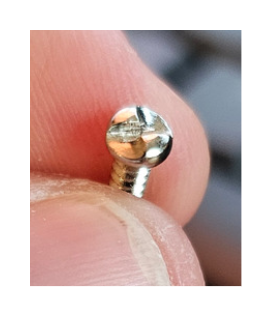
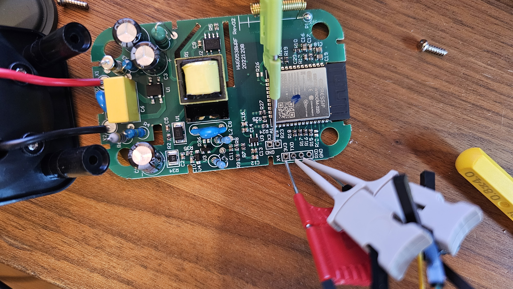
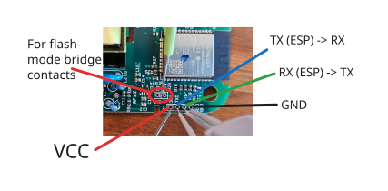
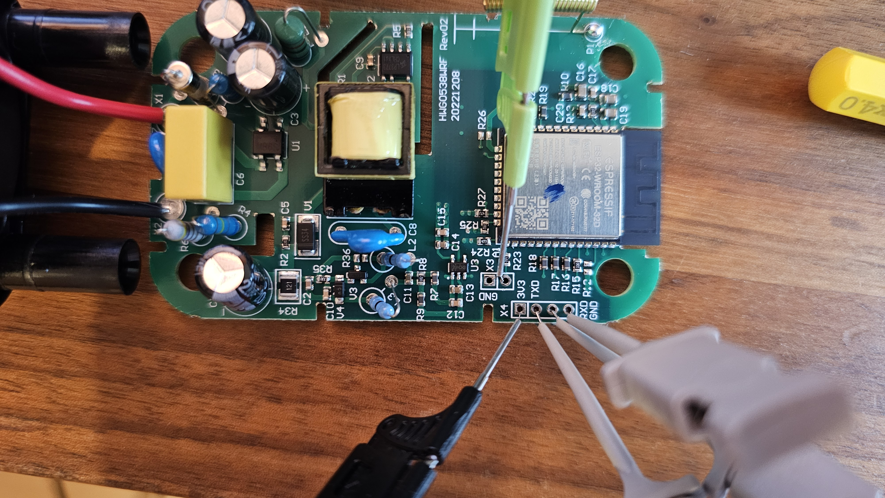

Use this page to flash the custom DIIVOO2MQTT firmware onto the original DIIVOO gateway.
The first flash requires opening the gateway and connecting a 3.3 V USB-to-serial adapter.
Unofficial project
Not affiliated with DIIVOO
1. Open the gateway

One-way clutch-head security screw from the gateway case.
The case uses one-way clutch-head security screws. They look like slotted screws, but the opening side is ramped.
A matching security bit may not reach the screw because the screw sits deep inside a narrow plastic recess.
Use the widest flat-head screwdriver that fits into the recess without being too thick.
Press down hard and turn slowly. If the screwdriver rides up, stop and reposition it before the head gets damaged.
2. Connect the serial adapter
Do not plug the opened gateway into a wall outlet.
During flashing, power the ESP32 only through the 3.3 V USB-to-serial adapter.
Never connect mains power while the case is open or while the serial adapter is attached.
Keep the USB-to-serial adapter unplugged while wiring.
Set the flash-mode bridge first, then plug in the adapter. If the ESP32 receives power
before the bridge is in place, it will boot normally instead of entering flash mode.
Serial wiring
Adapter
Gateway ESP32
3.3V
3.3V
GND
GND
TX
RX
RX
TX
Flash mode bridge
The boot/flash connection is not another USB-to-serial wire. To enter flashing mode,
bridge the two marked flash-mode contacts on the gateway PCB before the ESP32 receives
power. Then plug in the USB-to-serial adapter. Once flashing has started, the bridge can
stay in place; removing it is optional.

Serial header on the opened gateway PCB.

Pinout: 3V3, TXD, RXD, GND and boot contact.
3. Check before flashing
Use a USB-to-serial adapter with real 3.3 V logic level.
Leave the gateway unplugged from mains power while it is opened.
Disconnect anything else that could use the serial port.
Use short, stable jumper wires.
The initial flash replaces the original gateway firmware.

Opened gateway PCB. Keep it disconnected from mains while working on it.
4. Flash the firmware
Chrome or Edge on desktop required.
Loading firmware version...
3.3 V only. Do not connect 5 V serial logic to the ESP32 pins.
Keep the boot pin connected to GND while starting the flash process.
The gateway contains a regular ESP32. A failed flash usually does not brick it permanently;
in most cases you can put it back into boot mode and flash again. The real risk is incorrect
wiring or using 5 V logic on the serial pins.
Flash sequence
1Leave the USB-to-serial adapter unplugged.
2Connect the serial wires and set the flash-mode bridge on the PCB.
3Plug in the USB-to-serial adapter while the bridge is still in place.
4Click Connect, select the serial port, and start flashing.
5Once flashing has started, you may remove the bridge, but you do not have to.
6Wait until flashing has finished, then reboot the gateway.
5. Read the blue LED
While connecting to WiFi
The gateway LED blinks slowly until it joins your network.
Fast blinkSetup or pairing portal active, no stored WiFi, or connection failed.
Slow blinkBooting and trying to connect to WiFi.
OffConnected and ready for DIIVOO2MQTT.
6. Continue in Home Assistant
Disconnect the serial adapter and power the gateway normally.
Configure WiFi through the gateway setup portal if needed.
Install the DIIVOO2MQTT add-on in Home Assistant.
The add-on discovers flashed gateways through mDNS.
Flashing is at your own risk. Keep a copy of any data you need before replacing the original firmware.